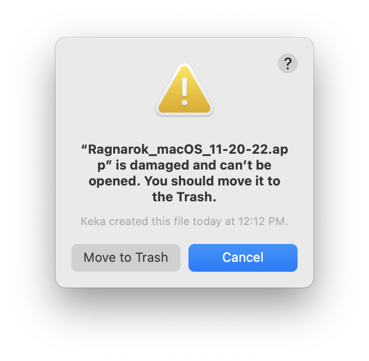

This week was our big design-implementation convergence for the Waiting Room screen. I pair-programmed with our designer and the other developer assigned to this task to finalize the screen. In particular, we added an automatic refresh for the room list so that players can easily join each others rooms. We also ran a variety of tests to ensure that rooms would appear and dissapear correctly, and that players could join and leave without other errors appearing. I also added a big error message across the main menu if steam did not initialize properly, to assist with ironing out steam init errors. The other teams also got their features in, so we now have level partitioning and notifications for joining and leaving.
Because of our Steam integration and our use of il2cpp, our build process is not as trivial as that of past studio projects. We noticed a few issues when trying to generate builds to give to designers or playtesters which I endeavored to solve this week.
Issue 1: The macOS Zip Corruption DebacleThe vast majority of our designers use Macs, but our developers mostly use Windows (I personally opt to use a CAEN workstation), so we didn't catch the fact that our macOS builds didn't work at all. When our Designers tried to use the macOS builds that I uploaded to our Build Depot confluence page, they would get an error message like this:
It turned out that the process of creating a zip file out of mac builds was corrupting them. Neither Keka (a third party app I use to make 7zip files on macOS) or the built in Archive Utility could zip the game such that it would survive being unzipped. The reason was the zipping process was invalidating the code signature and other security requirements macOS imposes. It is a solveable problem, but it introduces a lot of complexity to the build process.
Instead of having Unity generate a macOS build directly, we instead need to set it to generate an Xcode project. Then, we have to make a few changes to the Xcode project before making the build. First, we need to enable Hardened Runtime, a macOS security feature that alters permissions to disable things like executable memory. In general it is good to enable this feature because it's free improved security, and il2cpp builds don't use JIT, so we don't need executable memory. We also have to enable code signing, and specify a development Team to use for the code signing process. Fortunately, any free Apple ID can work with this, so for the purposes of internal builds, I used my personal account, but the studio will need to make an official account for the final Steam release. I documented the full process on Confluence (internal page, you will need to log in to view it). Once these settings are enabled, we can generate a build, and now we can zip and unzip this build as much as we want without it getting corrupted.
It's good that we are able to solve this problem, but it adds a lot of overhead to generating builds, since we have to repeat those steps manually every time we generate a new macOS build. I think this is something that Unity should be doing for us, especially since they control the entire build process. Unreal has a section in its project settings where one can enter code signing details so that it can handle the entire process fully automatically, and projects that use my own engine RavEngine can enable these features and set a development Team in their CMakeLists.txt. The fact that Unity does not have an automatic solution means that we cannot create a CI autobuild service for the studio for mac builds.
Issue 2: steam_appid.txtWhen creating development builds of games that use the Steam IPC API, a file named steam_appid.txt must be present next to the executable. This file contains the SteamWorks application ID, which Steam then uses to determine what APIs and services are available to the game, and in what fashion. Unity's default build process does not account for this. If the file is missing, or has the wrong ID, SteamWorks will fail to initialize, which means all Steam services are unavailable to the build.
Solving this problem on Windows was fairly straightforward. Unity exposes a build hooks API so that one may execute code during the build process at different stages of completion. We are interested in [PostProcessBuild], which executes on completion of the build. I added an Editor script which subscribes to this event and copies steam_appid.txt to the root directory of the build output. Then, if the tester or designer has steam running, the game will be able to properly initialize SteamWorks.
Unfortunately on macOS the solution is not straightforward. Because we now have to use the Xcode option, PostProcessBuild executes when Unity has finished writing the Xcode project, not when the Xcode build has completed, so it's useless for copying steam_appid.txt. There is a way to modify the generated Xcode project but it comes with a big caveat. The API to modify Xcode projects is exposed through UnityEditor.iOS.Xcode, which requires all team members to install the iOS build support, even though our game does not ship on iOS. I decided that it wasn't worth the management overhead for configuring new development machines to add an automatic copier for mac builds, so I instead wrote a documentation page on Confluence which explains how to copy the txt file manually.
The good news is that the final Steam release of the game does not need to bother with steam_appid.txt at all, because Steam knows the App ID when it launches the game from the library page. So these issues are isolated to internal users running the game manually.
| Task | Programming | Communicating | Researching | Task Total |
|---|---|---|---|---|
| Waiting Room | 5h | 4h | – | 9h |
| Build Pipeline | 1h | - | 2h | 3h |